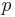
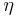
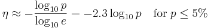

![[Main Page]](../../rsrc/bci2000logo.svg)
StimulusTask Class
Programming Reference
Location
BCI2000/src/shared/modules/application
Synopsis
The StimulusTask class is a base class for application modules that present a sequence of stimuli. You do not use objects of type StimulusTask directly; rather, you implement your own class that inherits from it, and implements specialized behavior building on the base functionality provided by the StimulusTask class.
The StimulusTask class performs sequencing, and dispatches GenericFilter::Process() calls to its virtual member functions. Child classes (descendants) of StimulusTask implement event handlers by overriding its virtual functions, and populate the stimulus-target association map, thereby associating stimulus codes with sets of stimuli, and possible selection targets.
In the BCI2000 core distribution, both the P3SpellerTask and the StimulusPresentationTask are based on the StimulusTask base class, and implement their own specialized behavior on top of it.
Introduction
The StimulusTask class is a base class for applications that present stimuli to the user, and optionally perform selection of a selection target based on a real-time evaluation of the user's brain signals generated in response to stimulus presentations. Straightforward as this seems, complication arises from the fact that there is not always a 1-to-1 relation between stimuli to present, and targets to choose from (e.g., the P3SpellerTask will present rows and columns of the selection matrix, but the final choice will be a single matrix entry rather than a row or column). Also, due to the low signal-to-noise ratio in individual evoked response signals, it is generally necessary to perform multiple stimulus presentations before a target may be selected with reasonable accuracy.
Through its interface to descendant classes, the StimulusTask base class allows for efficient implementation of various kinds of such applications. In detail, the following basic concepts are involved in the interaction between StimulusTask, and a descendant class.
Presentation of stimuli
Individual stimuli are instances of stimulus classes, which derive from a common Stimulus base class. There are classes for visual and auditory stimuli available. A StimulusTask descendant class may instantiate any number of stimuli during OnInitialize(). Each stimulus must be made known to the StimulusTask class by adding it to a so-called "Association" (see below). The StimulusTask class will then take care of presenting those stimuli at appropriate points in time, according to user configuration.
Grouping of stimuli
Stimuli are presented as groups called "Associations". Each Association corresponds to a single StimulusCode value. No Associations exist when a StimulusCode descendant's OnInitialize() function is called. As a coding example, the descendant may add a stimulus to an Association with StimulusCode 23 by calling
SomeStimulusClass* pStimulus = new SomeStimulusClass; ... // set stimulus properties Associations()[23].Add( pStimulus );
There, a new Association object for StimulusCode 23 will be created if it does not exist. Stimulus codes are positive integers. They need not be continuous, may be specified in any order, and chosen as deemed convenient. A zero StimulusCode represents absence of a stimulus, so 0 cannot be chosen as a StimulusCode index for an association. Still, an Association object with index 0 may be created, but it will be ignored during stimulus presentation.
Note that an empty Association object is created on any access to a non-existing index, both read and write accesses. Thus, you will need to take care to avoid unwanted empty Associations, i.e., don't use an Association index unless you want that Association to exist. If an empty Association exists, its StimulusCode may appear in the presentation sequence, taking up a presentation time slot without any stimulus being presented. In case such behavior is actually desired, an empty Association may be created by calling
Associations()[index];
Whenever the StimulusCode state becomes nonzero, all stimuli contained in the corresponding Association are presented simultaneously. An Association may contain a single stimulus only (e.g., when presenting images in the StimulusPresentation module), or it may contain multiple stimuli (e.g., matrix speller rows and columns are made up of multiple stimuli, where each stimulus is a single matrix entry). Also, Associations may contain different kinds of stimuli (e.g., when presenting both images and audio files with StimulusPresentation, or when using auditory stimuli to announce rows or columns in the P3Speller).
Sequencing
Presentation sequences consist of Associations, represented by their StimulusCodes.
The StimulusTask base class does not do any sequencing by itself. Rather, each time before a presentation happens, the OnNextStimulusCode() function is called, which must be implemented by a StimulusTask descendant. The descendant class indicates the end of a sequence by returning zero as a StimulusCode. Further, it indicates the end of a run by returning a zero StimulusCode twice in a row (i.e., an empty sequence). The information about existing StimulusCode values will be known by a descendant because it is responsible for populating the Associations object, but to avoid duplication of information, it may be appropriate to either
- choose stimulus codes from a continous range 1..N, and obtain N by calling Associations().size(), or
- iterate over the Associations() object which is a std::map<int, Association>.
In the StimulusPresentation module, sequences may be user-defined, and there exists a 1-to-1 correspondence between StimulusCodes, and entries in the Stimuli matrix. In the P3Speller module, sequences are random permutations of an enumeration of all existing rows and columns, and are chosen randomly at runtime.
Classification vs Target Selection
Brain signals are generated in response to individual stimulus presentations. When used in conjunction with a StimulusTask application, a signal processing module is supposed to provide a classification score for individual brain responses, or an average score for a predefined number of brain responses elicited by presentation of a certain Association/StimulusCode.
Specifying Stimulus-Target Relations
In general, there is no direct correspondence between stimulus presentations, and possible selection targets. E.g., in the P3Speller, stimulus presentation is done by highlighting rows and columns, but an individual matrix entry will be selected rather than a row or column. Thus, evidence collected in response to presentation or rows and columns needs to be combined into evidence per selection target before selection can be performed. This translation of per-presentation evidence into per-target evidence is done automatically by the StimulusTask class, provided StimulusTask has been given the necessary information about how stimuli and targets are related to each other.
A Target base class exists for this purpose, which defines a Select method to be implemented by Target descendants overriding the Target::OnSelect() member function. As an example, the P3Speller defines a SpellerTarget descendant class which performs an appropriate action on the Speller object if selected as a target.
The StimulusTask class is given information about stimulus-target relations by the Association mechanism described above. In addition to Stimulus objects, the Association::Add() function may be called with Target objects as well, creating a link between presentation of stimuli contained in the Association, and selection of targets contained in the Association. In many cases, there will be a 1-to-1 relation between stimuli, and targets, e.g. a P3Speller matrix entry will create both a Stimulus object (so it can be highlighted), and a Target object (so it can be selected, and perform some action). However, this is not mandatory -- multiple stimuli may refer to the same target, e.g., neighboring P3Speller matrix elements might select the same target in order to make selection easier for that target; or multiple targets might refer to the same stimulus in a hierarchic selection scheme. Though it may seem unintuitive at first, no 1-to-N or N-to-1 relations between stimuli and targets need to be specified explicitly in such cases; simply adding any target related to any stimulus contained in an Association will result in correct target selection. Individual stimulus-target relations are implicitly contained in the resulting Associations, and could be recovered by using set operations on the Associations' stimulus sets, and target sets, but they are not necessary for computing per-target evidence.
Accumulation and Combination of Evidence
Combination of evidence across individual stimulus presentations is also required if one wants to dynamically choose the number of stimulus presentations that occur before a selection is made. This may be advantageous if the "quality" of brain responses varies, which may be due a number of factors, such as position of a target with respect to the user's eye focus, or the user's attentiveness to the spelling task. In such cases, stimulation sequences may be repeated indefinitely, and evidence from stimulus presentations may be collected into per-target evidence, until a certain threshold is reached. Compared to a system with a fixed number of stimulus repetitions, such a system will improve information flow (bitrate) by avoiding redundant stimulus presentations which would be wasted time in case of good signal-to-noise ratio, and by avoiding selection errors in case of bad signal-to-noise ratio.
In the case of evoked brain potentials (ERPs, e.g., P300 wave), a linear classifier may be used to classify between the two cases "ERP occurred" vs "no ERP occurred". Quite favorably, it may be shown that in this case the linear classifier's output is a linear function of the log-likelihood ratio representing evidence in favor of the "ERP occurred" case, and against the "no ERP occurred" case. As a result, combined resp. accumulated evidence in favor of single selection targets can be accurately computed from the classifier's output for individual brain responses, by using Association information about how stimuli were grouped in presentation. This allows classification to be performed entirely by the StimulusTask class, omitting the need for classification code within a descendant class. Still, a descendant class may implement its own classification by overriding the OnClassResult() function, or it may modify the default classification result by overriding OnClassResult(), and calling StimulusTask::OnClassResult() within its own implementation of that function.
Using a Different Classifier with StimulusTask
In general, linear classification may be considered optimal for detection of evoked potential responses, and the P3SignalProcessing module performs such linear classification.
Still, you might want to use a different classification algorithm in order to classify the brain's response to a stimulus, e.g. you might want to use oscillatory signal features in addition to or in place of evoked potentials. In such cases, combination and accumulation of evidence may not function properly, unless you transform classification output into the kind of data which is expected by StimulusTask-based applications such as the P3Speller application module.
Converting a Classifier's Output into a Classification Score
As described above, the output of P3SignalProcessing represents a log-likelihood ratio in favor of the existence of a brain response. Thus, when using StimulusTask with a different classifier, that classifier's output should be converted into a log-likelihood ratio before sending it to the application module.
In terms of the probability  for the case that no brain response has been observed, the log-likelihood ratio is defined as
,
where ln stands for the natural logarithm, which is often termed log when provided as a function in programming environments.
Using the above formula, the output of a binary classifier may be converted into a log-likelihood ratio by first determining the probability against the existence of a response. Depending on the nature of your classification algorithm, you may need to do some analysis by your own in order to determine that probability. In many cases, however, may be obtained from classifier output by one of the following methods:
Classifier Error Rates
For a classifier with binary output , if the false positive rate is estimated to be , and the false negative rate is estimated to be , you will have
Measures of Significance
A -value from a statistical test is the probability for the null hypothesis to be true. The null hypothesis is "there was no ERP", and thus a -value represents the desired probability against an ERP.
Although a -value may not be directly available, other measures of significance, such as a  -value, may be converted into a -value. Formulae relating the -value to other measures of significance may be found in statistics textbooks, or web resources.
-value, may be converted into a -value. Formulae relating the -value to other measures of significance may be found in statistics textbooks, or web resources.
Transmitting Classification Scores
The StimulusTask class expects to receive a control signal with a single channel, and a single element. Whenever the StimulusCodeRes state is nonzero, it will treat the single value of its control signal as an update to the classification score associated with the StimulusCode sent in the StimulusCodeRes state.
Classification score updates may be sent any time during sequence or post-sequence (PhaseInSequence state is 2 or 3). Though the order in which classification scores are sent does not matter, StimulusTask expects to receive exactly one classification result for each StimulusCode that has been presented since the last classification score update was sent.
Only a single classification score can be sent for each signal data block. If your classifier operates by comparison of multiple brain responses, rather than each response individually, you should store classification scores in a stack-like data structure, and send only the top of the stack at each data block.
Detailed processing of classification score updates depends on the MinimumEvidence and AccumulateEvidence parameters.
Events
Events Summary
The following table indicates which events exist, and the temporal sequence in which they occur. Stimulus presentation proceeds in "phases", which are distinct parts of the stimulus presentation: Each presentation sequence is preceded by a "PreSequence" interval; the sequence itself consists of alternating "Stimulus" and "Inter Stimulus Intervals (ISIs)"; a "PostSequence" follows after the sequence.
Events marked with * may occur multiple times in a row. Events given in square brackets depend on the signal processing module, and may not occur at all; however, when they occur, their place in the temporal sequence will be as specified in the table.
Progress from one application state to the next will occur according to the sequencing parameters, or if requested by a handler via its doProgress output argument (see Input events below).
| Sequence of events | Phase | Typical application behavior | ||
|---|---|---|---|---|
| OnPreflight | ||||
| OnInitialize | ||||
| OnStartRun | display initial message | |||
| DoPreRun* | PreRun | |||
| Loop { | ||||
| OnNextStimulusCode | provide a stimulus code, or 0 to finish run | |||
| OnPreSequence | determine attended target | |||
| DoPreSequence* | PreSequence | |||
| OnSequenceBegin | ||||
| Loop { | ||||
| OnStimulusBegin | present stimulus | |||
| DoStimulus* | Stimulus | |||
| OnStimulusEnd | hide visual stimulus | |||
| OnNextStimulusCode | provide a stimulus code, or 0 to finish sequence | |||
| DoISI* | ISI | |||
| [OnClassInput]* | store classification input (copy/free modes only) -- this event may occur any time during the sequence, and during the post sequence phase | |||
| } | ||||
| OnSequenceEnd | ||||
| DoPostSequence* | PostSequence | |||
| [OnClassResult] | determine selected target (copy/free modes only) | |||
| } | ||||
| OnPostRun | ||||
| DoPostRun* | PostRun | |||
| OnStopRun | display final message | |||
| OnHalt |
Stimulus Code Event
int OnNextStimulusCode
This event handler is called immediately before stimulus presentation, and determines the sequence in which stimuli (or associations thereof) are presented. This handler should return the next element of the current sequence of stimulus codes, or zero to indicate the end of the sequence. A null sequence indicates the end of a run, i.e. the current run will end when OnNextStimulusCode returns two zeros in a row.
The OnNextStimulusCode event handler is mandatory for a StimulusPresentation descendant to implement. Thus, a minimal stimulus presentation application consists of a StimulusPresentation descendant that
- declares its own additional parameters from its constructor,
- checks those parameters for consistency in its OnPreflight handler,
- populates the Association Map in its OnInitialize handler, and
- provides a sequence of stimulus codes in its OnNextStimulusCode event handler.
Events forwarded from the GenericFilter interface
OnPreflight(SignalProperties (r))
OnInitialize(SignalProperties (r))
These events are forwarded from the inherited GenericFilter::Preflight and GenericFilter::Initialize events, with input signal properties as an argument. Within the BCI2000 filter chain, the StimulusTask class always writes its input signal through to its output signal, so no output signal properties are provided to these event handlers.
OnStartRun
OnStopRun
OnHalt
These events are forwarded from GenericFilter's StartRun, StopRun, and Halt events.
Phase transition Events
OnPreSequence
OnSequenceBegin
OnSequenceEnd
OnStimulusBegin(int stimulusCode (r))
OnStimulusEnd(int stimulusCode (r))
OnPostRun
These events are triggered by phase transitions during a run, e.g., the OnPreSequence event handler is called whenever the phase changes from PreRun to PreSequence.
The stimulusCode arguments to the OnStimulusBegin and OnStimulusEnd event handlers contain the stimulus code present in the StimulusCode state variable; the default behavior of these handlers is to present and conceal the respective stimuli. For the remaining event handlers of this category, the default behavior is to do nothing.
Input Events
DoPreRun(GenericSignal (r), bool doProgress (rw))
DoPreSequence(GenericSignal (r), bool doProgress (rw))
DoStimulus(GenericSignal (r), bool doProgress (rw))
DoISI(GenericSignal (r), bool doProgress (rw))
DoPostSequence(GenericSignal (r), bool doProgress (rw))
DoPostRun(GenericSignal (r), bool doProgress (rw))
Each call to GenericFilter::Process() is dispatched to one of these event handlers, depending on the phase in the sequence, with each handler function corresponding to a phase.
These event handlers will typically not be used by a task class that inherits from StimulusTask, unless it needs to modify the standard sequencing behavior, such that it progresses faster or slower from one phase to the next, or subdivides a phase into two or more sub-phases.
Modifying sequencing behavior is possible through the handlers' doProgress argument. doProgress will typically be set to false, except for the last call to the handler during the current phase in the sequence. A handler may modify the application's sequencing behavior by setting the doProgress argument: setting it from false to true will proceed to the next phase earlier than prescribed by the sequencing parameters, and setting it to false from true will defer progressing, such that the handler will be called again, until its doProgress argument is actually true on exit.
Classification Events
Target classification is based on the behavior of the P3TemporalFilter signal processing filter. This filter performs per-stimulus averaging over EEG epochs; once it has acquired the desired amount of epochs, it sets its output to the average wave form, and the StimulusCodeRes state to the respective stimulus code. In conjunction with the LinearClassifier (or other classification filter), this implies that the application module receives, in its input signal, a single classification value for stimulus whenever StimulusCodeRes equals .
OnClassInput(stimulusCode (r), GenericSignal (r))
The OnClassInput event handler is called each time a classification value has been received from the signal processing module. Classification values are stored in a ClassResult object. A StimulusPresentation descendant class may take additional action by implementing its own OnClassInput event handler.
Target* OnClassResult(ClassResult (r))
The StimulusPresentationTask' accumulates classification values in a ClassResult class, and then calls the OnClassResult event handler once classification input has been received for all stimulus codes.
The OnClassResult event handler is supposed to determine a selection target from these classification values. Classification values are provided in a ClassResult object; the OnClassResult handler returns a pointer to a Target object representing the chosen selection target, or a null pointer to indicate that no target has been chosen. On return from the OnClassResult event handler, and in case of a non-null pointer, the target object's Select() method is then called, which typically results in some action associated with the target object in question, such as entering a letter into a speller.
The default OnClassResult handler calls AssociationMap::ClassifyTargets() to translate classification values into selection targets; you may override this behavior by providing your own handler.
Properties
All properties are protected, i.e. intended for use from descendant classes only.
AssociationMap Associations (rw)
An object of type AssociationMap, representing sets of stimuli and selection targets associated with a given stimulus code.
Typically, a stimulus presentation application populates the Associations object with stimuli and targets in its OnInitialize event handler, and relies on the StimulusPresentationTask default mechanisms for stimulus presentation, and target classification.
Often, but not always, there is a 1-to-1-to-1 correspondence between stimuli, stimulus codes, and selection targets; for a detailed discussion of these terms, and how to use the related objects in your own application, refer to Programming Reference:AssociationMap Class.
Target* AttendedTarget (rw)
A pointer that refers to a selection target object, or a null pointer. When non-null, the StimulusType state variable is set based on the AttendedTarget property such that StimulusType is set to 1 whenever the current StimulusCode state variable refers to an Association that contains the specified target.
For a discussion of how stimuli, stimulus codes, and selection targets are related to each other via Association objects, refer to Programming Reference:AssociationMap Class#AssociationMap Class.
GUI::GraphDisplay Display (r)
The Display property provides access to the GUI::GraphDisplay object representing the application module's output window.
ostream AppLog, AppLog.File, AppLog.Screen (w)
Inheriting from ApplicationBase, descendants of StimulusTask have access to the AppLog, AppLog.File, and AppLog.Screen streams which are members of ApplicationBase. These streams allow convenient output into an application log file (AppLog.File), an application log window (AppLog.Screen), and both simultaneously (AppLog).
RandomGenerator RandomNumberGenerator (rw)
An object of type RandomGenerator which behaves according to the user setting in the RandomSeed parameter.
Methods
Methods are declared protected, i.e. for use by descendants only.
DisplayMessage(string)
Displays a text message in the application window. This function is provided for convenience and consistency of appearance; for detailed control over appearance of text messages, add your own TextField object to the GUI::GraphDisplay represented by the Display property.
Parameters
WindowBackgroundColor
The window's background color, given as an RGB value. For convenience, RGB values may be entered in hexadecimal notation, e.g. 0xff0000 for red.
PreRunDuration
The duration of the pause preceding the first sequence. Given in sample blocks, or in time units when immediately followed with 's', 'ms', or similar.
PostRunDuration
Duration of the pause following last sequence. Given in sample blocks, or in time units when immediately followed with 's', 'ms', or similar.
PreSequenceDuration
Duration of the pause preceding sequences (or sets of intensifications). Given in sample blocks, or in time units when immediately followed with 's', 'ms', or similar.
In free or copy mode, the PreSequenceDuration and PostSequenceDuration parameters may not go below twice the value of the StimulusDuration parameters, in order to allow for presentation of FocusOn and Result announcement stimuli.
PostSequenceDuration
Duration of the pause following sequences (or sets of intensifications). Given in sample blocks, or in time units when immediately followed with 's', 'ms', or similar.
When used in conjunction with the P3TemporalFilter, this value needs to be larger than the EpochLength parameter. This allows classification to complete before the next sequence of stimuli is presented.
StimulusDuration
For visual stimuli, the duration of stimulus presentation. For auditory stimuli, the maximum duration, i.e. playback of audio extending above the specified duration will be muted. Given in sample blocks, or in time units when immediately followed with 's', 'ms', or similar.
EarlyOffsetExpression
Allows the specification of an Expression that is constantly monitored during stimulus presentation. When the value of the Expression transitions from zero to non-zero, the stimulus is aborted early, even if the StimulusDuration has not yet elapsed. For example, set this Expression to KeyDown==32 and start your source module with the --LogKeyboard=1 flag: then the subject will be able to advance the stimulus sequence manually by pressing the space key.
ISIMinDuration, ISIMaxDuration
Minimum and maximum duration of the inter-stimulus interval. During the inter-stimulus interval, the screen is blank, and audio is muted.
Actual inter-stimulus intervals vary randomly between minimum and maximum value, with uniform probability for all intermediate values. Given in sample blocks, or in time units when immediately followed with 's', 'ms', or similar. Note that temporal resolution is limited to a single sample block.
InterpretMode
An enumerated value selecting on-line classification of evoked responses:
- 0: no target is announced "attended", and no classification is performed;
- 1: online or free mode: classification is performed, but no "attended target" is defined;
- 2: copy mode: "attended" targets are defined, classification is performed.
DisplayResults
Switches result display of copy/free spelling on or off. In the P3Speller, setting DisplayResults to 'off' will disable execution of all speller commands (such as switching matrices) as well.
MinimumEvidence
NOTE: If you are using your own classifier, this feature will not work properly unless your classifier's output matches certain criteria. Make sure to read these notes on how to use a different classifier.
By default, target selection is performed without considering the actual amount of evidence that favors the selected target over other targets. Although the selected target will always be a target with maximum classification score (i.e., evidence), other targets may have the same or a similar score. It may be useful to omit classification in such situations altogether, by specifying a minimum amount of evidence that must exist in favor of the selected target, when compared to the next-best target. When used together with the AccumulateEvidence option, this allows to dynamically control the number of stimulus presentations, by simply repeating stimulus sequences until a sufficient amount of evidence has been collected.
Setting MinimumEvidence to 0 or to a negative number will result in default behavior, i.e. there will be a target selection each time classification scores are received from the SignalProcessing module. For values greater 0, the amount of selection errors will become smaller as the value of MinimumEvidence is increased; this increases the amount of information contained in each selection. At the same time, it becomes more and more unlikely that a selection will occur at all within a certain amount of time; this decreases the amount of information transmitted per time (information flow, or bitrate). In between, a certain value will correspond to an optimal compromise between selection errors, and selection duration. At this point, the flow of information is maximized.
The meaning of the actual number entered into the MinimumEvidence parameter is relative to the amount of within-class variance present in the classification score. An evidence of 0 means a 50:50 chance for correct classification. Increasing the evidence value by two standard deviations corresponds to an improvement by a factor of roughly 88:12, four standard deviations correspond to (88:12)^2=(98:2) ... etc, approaching perfect classification as evidence increases towards infinity.
In classifier training, classifier weights may be normalized such that within-class variance is 1 (this is done by recent versions of the P300Classifier tool). In this case, you may use the following equations to convert between the MinimumEvidence parameter , and the correct classification chance  :
:
 .
.
For large , this relationship may be approximated and expressed in terms of error probability :
.
Thus, the evidence value roughly corresponds to twice the number of leading zeros in the desired error probability, if classifier weights are normalized. Some values are provided in the following table:
| Selection Error | Evidence |
|---|---|
| 5% | 3 |
| 1% | 4.6 |
| 0.5% | 5.3 |
| 0.1% | 6.9 |
| 0.05% | 7.6 |
| 0.01% | 9.2 |
AccumulateEvidence
By default, only those classification scores are used which have been received from the signal processing module immediately prior to classification. When AccumulateEvidence is set, classification scores are accumulated until a selection is actually performed. Typically, accumulated classification scores will have higher evidence values, such that a selection threshold set with MinimumEvidence will be eventually crossed after scores have been accumulated for some time.
This allows for dynamically choosing the number of stimulus repetitions in a P300 paradigm, by setting the number of stimulus repetitions to 1, and setting the MinimumEvidence parameter to a value greater zero.
In addition, accumulated overall evidence will not increase if there is no consistent evidence in favor of a certain target. Thus, it is possible to operate a P300 BCI in a quasi-asynchronous mode by using AccumulateEvidence, and choosing a MinimumEvidence value that is large enough to make accidental selection unlikely. In this configuration, no selection will be made unless the BCI user is actually concentrating on a target for a number of stimulus presentations, resulting in consistently accumulating evidence for that target.
NOTE: If you are using your own classifier, this feature will not work properly unless your classifier's output matches certain criteria. Make sure to read these notes on how to use a different classifier.
PhotoDiodePatch
Display a photo diode patch on the stimulus window. Recording from a photo diode located on that patch will allow triggering on actual stimulus delivery (see User_Reference:P3TemporalFilter#OnsetExpression).
PhotoDiodePatchHeight
Photo diode patch height in relative coordinates (between 0 and 1).
PhotoDiodePatchWidth
Photo diode patch width in relative coordinates (between 0 and 1).
PhotoDiodePatchLeft
Photo diode patch left position in relative coordinates (between 0 and 1).
PhotoDiodePatchTop
Photo diode patch top position in relative coordinates (between 0 and 1).
PhotoDiodePatchShape
Photo diode patch shape: 0 rectangle, 1 ellipse.
PhotoDiodePatchActiveColor
Photo diode patch color when active (RGB color in format 0xrrggbb).
PhotoDiodePatchInactiveColor
Photo diode patch color when inactive, (RGB color in format 0xrrggbb, use 0xff000000 for transparent).
PhotoDiodePatchExpression
Photo diode patch expression, determines active state by evaluating to nonnull. Defaults to StimulusBegin>0.
States
StimulusCode
The numerical ID of the stimulus being presented (16 bit).
StimulusType
This state is 1 during presentation of an attended stimulus, and 0 otherwise. The notion of an "attended" stimulus requires data recording in copy mode.
StimulusBegin
This state is 1 during the first block of stimulus presentation, and 0 otherwise.
PhaseInSequence
This state is 1 during pre-sequence, 2 during sequence and 3 during post-sequence (see Timeline).
PauseApplication
While this state is set to 1, no task processing occurs, i.e. the task is paused, and may be resumed by setting PauseApplication to 0.
Timeline
{kind=link}
See also
User Reference:P3TemporalFilter, User Reference:P3SpellerTask, User Reference:StimulusPresentationTask;
Programming Reference:AssociationMap Class, Programming Reference:Stimulus Class, Programming Reference:Target Class